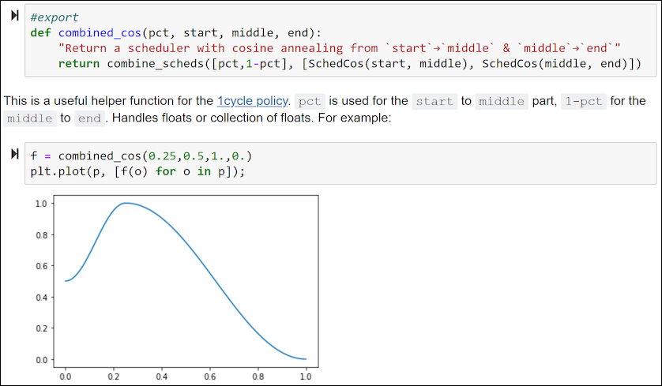
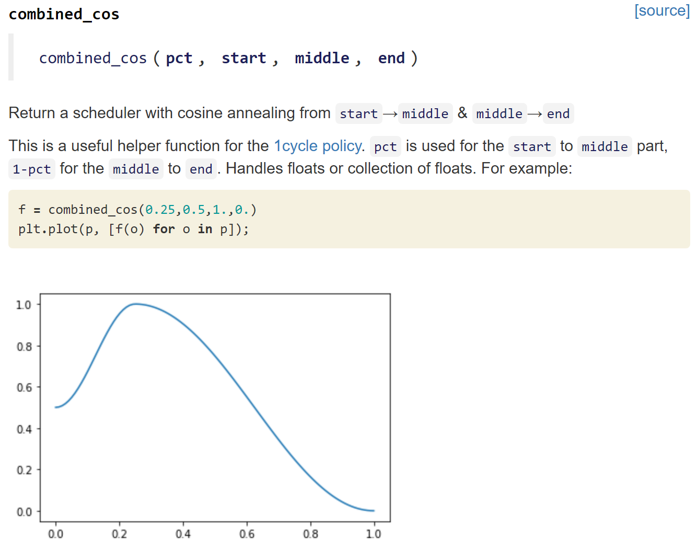

nbdev is a library that allows you to fully develop a library in jupyter notebooks, putting all your code, tests and documentation in one place. Using the interactive enviromnent, you can easily debug and refactor your code. By simply adding #export flags to the cells that define the functions you want to keep, you can then convert your notebook in a standard python module with just one command in the console or one line of code at the end of your notebook:

Here the function add_init is defined in the first cell (marked with the export flag) and tested in the second cell. In the last cell of your notebook, you can then run:
from nbdev.export import *
notebook2script()
Or in the command line, you can run:
nbdev_build_lib
as long as you are somewhere in the folder where you are developing your library.
Since you are in a notebook, you can also add text, links or images that will be kept along with the tests when you generate the documentation of your library. The cells where your code is defined will be hidden and replaced by a satandard documentation of your function, showing its name, arguments, docstring, and link to the source code on github. For instance, the cells before are converted to:

In the other pages of the documentation, you can get more details about:
nbdev is is on PyPI so you can just run
pip install nbdevFor a developer install, use the following
git clone https://github.com/fastai/nbdev
cd nbdev
pip install -e .If you want to contribute to nbdev, be sure to review the contributions guidelines. This project adheres to fastai`s code of condut. By participating, you are expected to uphold this code. In general, the fastai project strives to abide by generally accepted best practices in open-source software development.
Make sure you have the git hooks we use installed by running
nbdev_install_git_hooksin the cloned repository folder.
Copyright 2019 onwards, fast.ai, Inc. Licensed under the Apache License, Version 2.0 (the "License"); you may not use this project's files except in compliance with the License. A copy of the License is provided in the LICENSE file in this repository.